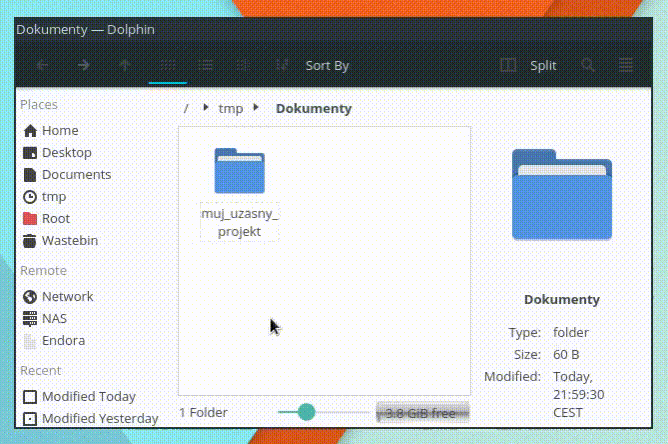
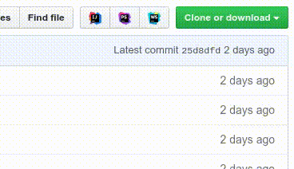
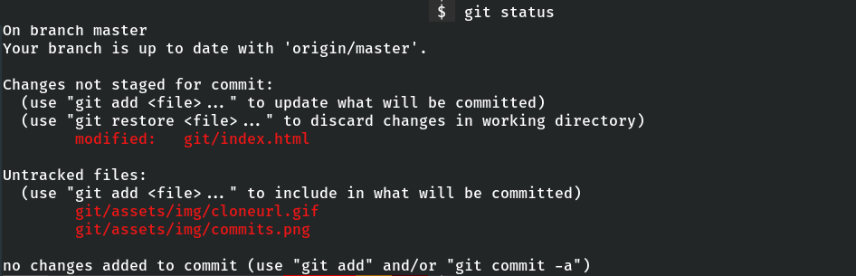
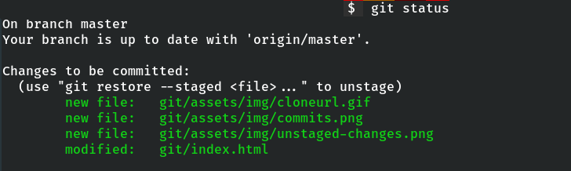

git(gud)
Co to je?
Jak se to používá?
Jak to funguje?
Jan Černohorský
Vojtěch Káně
Co to je?
VCS - Version Control System


CLI vs. GUI


Instalace
Linux
sudo apt install gitsudo zypper install gitsudo yum install gitsudo pacman -Sy gitAdvanced masox
brew install gitWidličky a MASOX
https://git-scm.com/downloads
Git Bash - chová se jako na UNIXu
Jak se to používá
Vytvoříme repozitář
mkdir muj_uzasny_projekt
cd muj_uzasny_projekt
git init
nebo stáhneme existující
git clone https://github.com/nekdo/neco.git
cd neco
Provedeme změny
Zacommitujeme
git add -A
git commit -m "Přidán seznam pečiva."
Pushujeme
git push
nebo
git push origin master
Zjištění stavu repozitáře kdykoliv během práce
git status
git init
Vytvoří prázdný repozitář v aktuální složce
Můžeme
použít v prázdné složce a začít nový projekt
nebo
přidat git do existujícího projektu
git clone
git clone <adresa> [složka]
adresa - např. https://gitlab.com/nekdo/neco.git
složka - výchozí je název repozitáře
Autentifikace
SSH vs. HTTPS
HTTPS
obvyklé použití:
bez autentifikace - veřejné repozitáře, read only
pro autentifikaci se musí zadat jméno a heslo při každém připojení
SSH
obvyklé použití:
soukromé repozitáře, přispívání
nutná konfigurace: Connecting to GitHub with SSH
liší se adresami:
HTTPS: https://github.com/nekdo/neco.git
SSH: git@github.com:nekdo/neco.git
git remote
git remote add origin <adresa>
v 99% případů pouze jeden remote - origin
git remote add <jméno> <adresa>
commit
to commit, one commit, more commits
česky spáchat
- nepoužívá se
je jednotka v historii
obsahuje:
- provedené změny
- commit message - krátký popis provedených změn
- metadata (autor, datum, čas ...)
- svůj otisk - sha1 hash => univerzální identifikátor
- otisk rodiče(ů)
git status
když nenastaly žádné změny od posledního commitu:
$ git status
On branch master
Your branch is up to date with 'origin/master'.
nothing to commit, working tree clean
nevybrané změny:
vybrané změny:

git add
Vybrání všech změn:
git add -A
Vybrání dle názvu souboru:
git add cesta/soubor [...cesta/soubor]
git commit
vytvoří nový commit
syntax:
git commit -m "Přidáno pečivo."
--amend upravuje předchozí commit
git commit --amend -m "Přidáno pečivo a taky rohlíky."
git push
odesílá změny na remote
syntax:
git push origin master
git push --set-upstream origin master
si zapamatuje, kam změny posíláme, poté stačí
git push